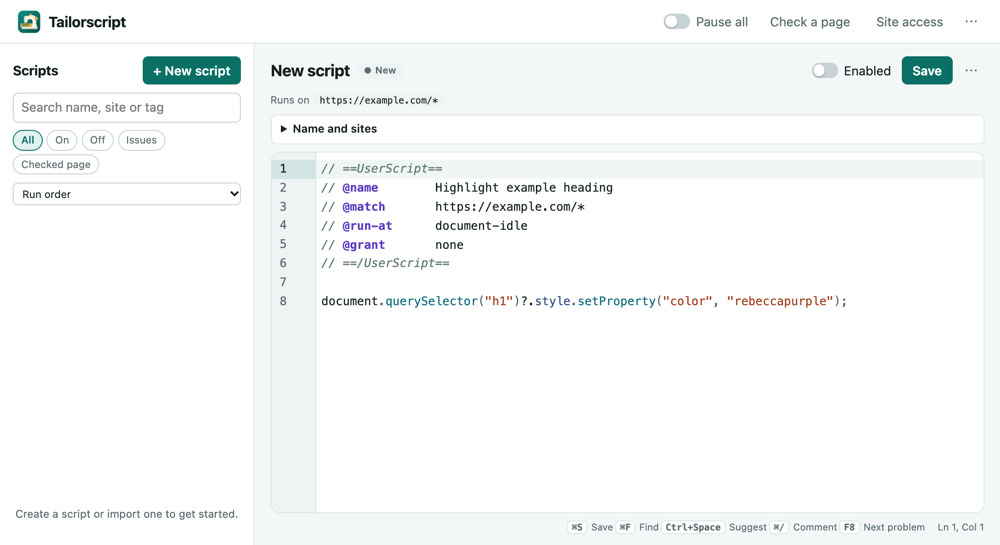

Tailor websites with your own JavaScript
Tailorscript is a userscript manager for Chrome. Write a script or install one, choose the sites it runs on, and it stays in your browser.
Needs Chrome 138 or later. No account, no servers, no tracking.

What it does
-
An editor that knows userscripts
Completions for metadata and GM APIs, inline problems with quick fixes, parameter hints, find and replace, and version history with side-by-side comparison.
-
Install after you review
Open any
.user.jslink from Greasy Fork, OpenUserJS or GitHub and see the sites, APIs and code before it is added. Updates that need new access wait for you. -
See what ran
The toolbar shows which scripts ran on the current page and which hit errors, with a jump to the failing line.
-
Works with existing scripts
@require,@resource,@connect, match and include rules, and the familiar GM APIs: requests, menu commands, notifications, clipboard and stored values. -
You stay in control
Run a script once, stop it on one site, set the run order, or pause everything with one switch or a keyboard shortcut.
-
Hard to lose work
Deleted scripts wait in the Trash for 30 days. Back up to a file or to Chrome sync, and import with a review step.
Install
Download
tailorscript-<version>.zipfrom the latest release and unzip it.Open
chrome://extensionsand turn on Developer mode.Choose Load unpacked and select the unzipped folder.
Open Details for Tailorscript and turn on Allow User Scripts. Chrome keeps userscripts off until you do.
Click the Tailorscript toolbar button, choose Open manager, and enable the starter script to try it on
example.com.
Private by design
Your scripts, their history and your settings are kept in your browser's extension storage. Tailorscript has no servers, analytics or advertising, and it asks for access to a site only when you enable a script for it.